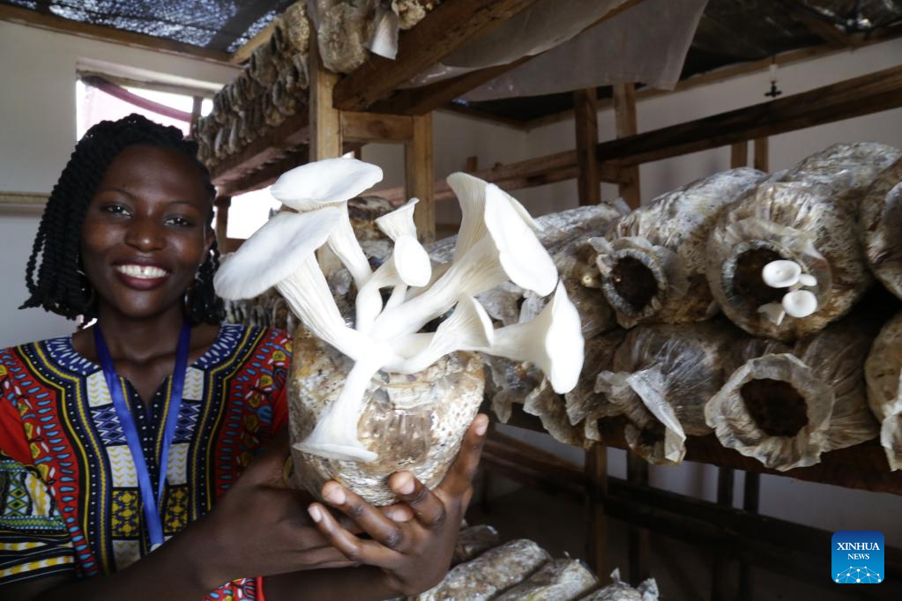
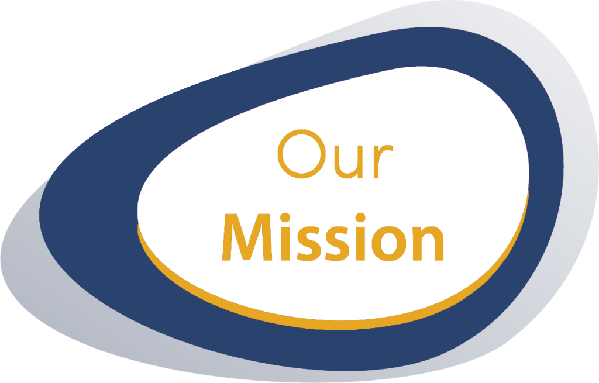

About Mushlift Ltd
Empowering communities through sustainable mushroom farming.
Background
Mushlift Ltd is a Rwandan venture focused on addressing poverty, malnutrition, and youth unemployment through sustainable mushroom farming and the production of mushroom-based healthy and nutritious products such as mushroom porridge flour, powder, canned sauces, and more.
Through our MUSHGROW poverty graduation model, our 12–18-month program empowers ultra-poor families, especially women-led households and those with stunted or malnourished children. We train them in mushroom farming, healthy nutrition practices like kitchen gardening, and provide access to 150 mushroom tubes (seeds) to get started — building resilience, healthier children, and stronger communities.


Vision
To build a nourished, empowered, and self-reliant society free from poverty, hunger, and malnutrition through sustainable mushroom farming.
Mission
To fight malnutrition, poverty, and unemployment by empowering vulnerable communities through sustainable mushroom farming, nutrition-focused products, and our inclusive poverty graduation model.